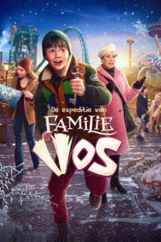

AKA:De expeditie van familie Vos (Título original)
País:Países Bajos, 72 minutos.
Idiomas:Neerlandés, Español
GénerosAventuras, Familiar
Director/es:Bob Wilbers
Guionistas:Job Römer, Nienke Römer
Códec de vídeo:Unknown
Número: 228


Certificación:
Argumento:
Durante el fin de semana familiar anual en el parque temático "De Efteling", Teun, de once años, descubre que su abuelo recientemente fallecido le dejó una última búsqueda del tesoro dentro del parque.
Reparto
Medio: Archivo de video,
Localización: D:\Multimedia\Películas\Un Mundo Encantado (2020)\Un Mundo Encantado (2020).mkv
Prestado: No
Rel. aspecto: Unknown